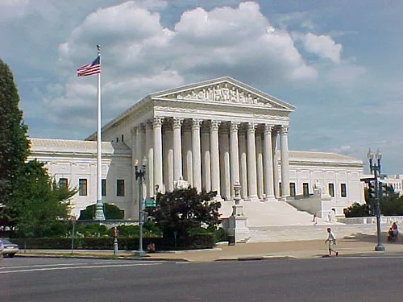

종합특검, 김태효 前 안보실 1차장 구속기소…"계엄 정당화 메시지" 혐의
2차 종합특검팀이 29일 김태효 전 국가안보실 1차장을 내란중요임무종사 및 직권남용권리행사방해 혐의로 구속 기소했다. 특검팀은 김 전 차장이 2024년 12월 3일 비상계엄 선포 직후 외무공무원을 통해 미국 등 주요 우방국에 계엄의 정당성을 설명하는 메시지를 전달하도록 관여한 것으로 보고 있다. 앞서 구속영장이 발부된 지 약 한 달여 만에 구속 기한이 임박하면서 특검팀이 수사를 마무리 짓고 재판에 넘긴 것으로 풀이된다.
특검팀이 파악한 메시지에는 계엄 조치가 자유민주주의를 지키기 위한 것이라는 취지와 함께, 국회가 탄핵과 예산 삭감을 통해 행정부를 마비시키려 했다는 주장이 담긴 것으로 전해졌다. 이 같은 내용이 우방국 정부에 전달되면서, 계엄의 정당성을 대외적으로 선전하려 한 것 아니냐는 의혹이 제기돼 왔다. 특검팀은 이 메시지가 단순한 외교적 소통이 아니라 계엄 선포를 사후적으로 정당화하려는 조직적 시도의 일환이었다고 보고 수사를 진행해 온 것으로 알려졌다.

특검팀은 김 전 차장이 단독으로 움직인 것이 아니라 윗선의 지시에 따른 것으로 의심하고 있다. 특히 윤석열 전 대통령이 김 전 차장과 신원식 전 국가안보실장에게 계엄 선포 배경을 우방국에 설명하도록 지시한 정황이 있다고 보고, 두 사람에 대해서도 추후 공모 혐의로 별도 기소할 방침인 것으로 전해졌다. 특검팀은 이번 구속기소를 계기로 계엄 정당화 메시지 전달 경위 전반에 대한 수사를 이어갈 것으로 보인다.
이번 사건은 12·3 비상계엄을 둘러싼 여러 갈래의 수사 가운데서도, 계엄 선포 이후 대외 대응 라인을 정조준했다는 점에서 주목받고 있다. 그동안 특검 수사는 계엄 선포 결정 과정과 군 동원 경위에 집중돼 왔는데, 이번 기소로 계엄 이후 정부가 국제사회를 상대로 어떤 메시지를 관리하려 했는지까지 수사선이 확장된 셈이다. 법조계에서는 외교 채널을 통한 메시지 전달이 실제로 내란 행위의 중요임무 종사에 해당하는지를 두고 재판 과정에서 치열한 법리 다툼이 예상된다는 관측이 나온다. 특히 국가안보실이라는 공식 기구를 통해 우방국에 메시지가 전달됐다는 점에서, 이를 개인적 일탈이 아닌 조직적 지시에 따른 행위로 볼 수 있는지가 유죄 판단의 관건이 될 것으로 보인다.

정치권 반응도 엇갈린다. 여권에서는 이번 기소가 계엄 사태의 전모를 밝히는 데 필요한 절차라며 신속한 재판 진행을 촉구하고 있는 반면, 김 전 차장 측과 야권 일부에서는 외교적 소통 행위를 내란 혐의로 무리하게 확대 해석하고 있다는 반발도 나온다. 특검팀은 이런 논란을 의식한 듯 기소 배경과 증거 관계를 상세히 설명하며 수사의 정당성을 강조하고 있는 것으로 전해졌다.
2차 종합특검은 앞서 국회에서 수사 기간 연장 법안이 통과되며 수사 동력을 이어가고 있다. 특검팀은 김 전 차장 기소를 발판 삼아 신원식 전 실장과 윤 전 대통령 등 이른바 '윗선'에 대한 수사도 속도를 낼 것으로 예상된다. 향후 재판에서는 계엄 정당화 메시지의 작성 및 전달 경위, 그리고 이것이 실제 지시 체계에 따른 조직적 행위였는지가 핵심 쟁점이 될 전망이다. 특검팀이 예고한 대로 윤 전 대통령과 신 전 실장에 대한 추가 기소가 이뤄질 경우, 12·3 계엄 사태를 둘러싼 사법 절차는 한동안 여러 갈래로 동시에 진행될 것으로 보인다.